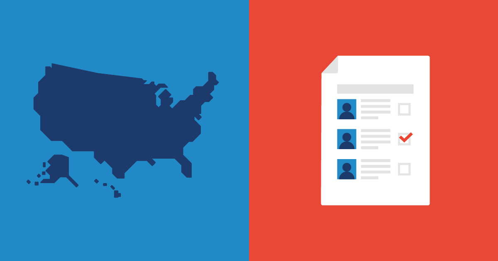
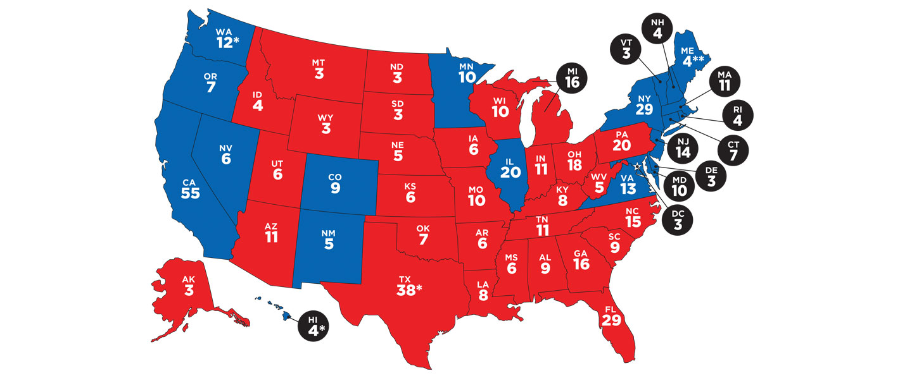

About The Electoral College
- Definition
- Some Examples
- Why it's controversial
Definition

The electoral college is where states, or other regions get electors, primarily based on population, and each electors chooses who's elected.
The electoral college helps smaller regions have more of a say in government than they're population would normally let them.
Some people think that the power to elect should be held in the people rather than a handful of electors.
In the United States

The United States gives each state the same number of electors as they have seats in the house.
For example, Colorado has 7 seats in the House of Representatives, 2 senators, so it has 9 electoral votes.
States have a minimum of three votes to account for lower population.
The president that wins is determined by the majority of house votes.
Many presidents have been elected despite getting less votes than the competition because of the electoral college.